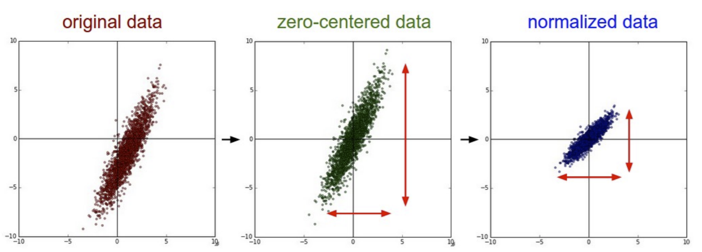
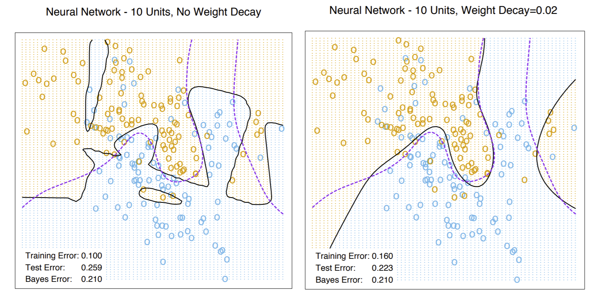
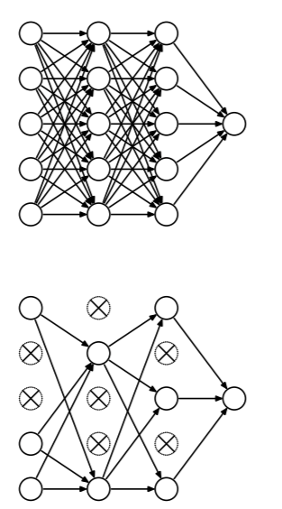

Improving Neural Network Training¶
So now we know the basics of neural networks, how they work, and how they are trained. Now, let’s cover some well-known heuristics that
make training (gradient descent) faster
allow NNs to find better local minima
mitigate overfitting
Heuristics for Faster Training¶
Neural nets are one of the slowest ML algorithms to train out there. Fortunately, nerds have come up with ways to speed them up. Unfortunately, depending on the application, some experimentation with algorithms and hyperparameter tuning is needed here.
First, let’s review the difference between batch and stochastic gradient descent. Stochastic GD is generally just faster than batch GD when we have a large dataset with redundant data. In datasets where each point is important, however, batch GD is better. Let’s take the MNIST dataset as an example: lots of redundant images, and SGD will learn this redundant information much more quickly.
An epoch is an iteration that presents every training point once. For batch GD, every iteration looks at the entire training set, so one batch GD iteration is an epoch. On the other hand, in SGD, we shuffle our training points and go through each of them one by one. Thus it can actually take less than one epoch for SGD to converge.
Normalizing our data is another way to speed up training. This means centering features and scaling them to have variance 1: \(\frac{X-\mu}{\sigma}\). Let’s look at an visual example of how normalization (or standardization) affects our data:
{kind=link}
Centering data seems to make it easier for hidden units to get into a good operating region of the sigmoid or ReLU. Scaling for unit variance makes the objective function better conditioned, so gradient descent converges faster.
We can also “center” the hidden units as well. The sigmoid function has an operating region centered at \(s(\gamma) = 0.5\). So the sigmoid output has a mean of 0.5- which can affect neurons in further layers and push them out of the ideal operating region. We prefer means centered at 0. So we can replace the sigmoid with one that passes through the origin: we can instead use the \(\tanh\) activation function:
\(\tanh(x) = \frac{e^x - e^{-x}}{e^x+e^{-x}}\). It can also be reached by a few stretches of the sigmoid function: \(\tanh(x) = 2s(2x)-1\). Now, instead of the range being \([0,1]\) as with sigmoid, the range is now \([-1,1]\). This keeps things centered, and downstream neurons are more likely to be centered as well. Of course, we have to replace \(s'\) with the derivative of \(\tanh(x)\) (\(1-\tanh(x)^2\)) in backpropagation as well. Of course, if we want to use \(\tanh\), our target values must allow negatives as well.
Another trick we can use is to apply different learning rates to weights in different layers in your neural network. It is important to understand that earlier layers tend to have smaller loss gradients. So earlier layers might need larger learning rates to keep up with later ones.
Another technique to speed up training is called emphasizing schemes. More redundant examples in training data are learned much more quickly than rarer, more unique ones. So we can “emphasize” the rare examples. We would want to present the rare examples more often, OR simply present them with a larger learning rate. Alternatively, we can take an idea from perceptrons and present misclassified points more frequently. However, take caution with emphasizing schemes when you have bad data or really noticeable outliers.
Another technique we can use is second-order optimization. This means looking at Hessians. However, with too many weights, the Hessian becomes far too expensive to compute very quickly. There are some “cheaper” second-order approximations, such as the nonlinear conjugate gradient method, which works well for small datasets and neural networks. It is inherently a batch GD method only, so it probably won’t work well with lots of redundant data. Another is called Stochastic Levenberg Marquardt, which approximates a diagonal Hessian.
Heuristics for Avoiding Bad Local Minima¶
Unfortunately, neural networks almost never have convex cost functions. So we can have many local minima, as well as plateaus (flat regions). There are things we can try to avoid this problem.
First, we can fix the vanishing gradient problem, which helps weights “move” more in successive iterations.
Stochastic gradient descent has a slight advantage to batch GD in terms of avoiding bad local minima, as it induces random motion, which gives it a chance to “get out” of a bad local minima should it get there.
Momentum is the idea of doing gradient descent on a velocity \(\delta W\). The velocity isn’t allowed to change too quickly, even if the gradient does. Sometimes this is enough to let us get out of a bad local minima. Here’s the algorithm:
Algorithm 10 (Gradient Descent, Momentum)
Initialize velocity \(\delta w = -\epsilon \nabla J(w)\)
Repeat
\(w \leftarrow w + \delta w\)
Update velocity with preserving momentum from previous iteration: \(\delta w \leftarrow -\epsilon \nabla J(w) + \beta \delta w\). \(\beta < 1\) tells us how much momentum is preserved.
The concept for momentum can be used for both batch and stochastic GD.
Heuristics to Avoid Overfitting¶
Finally, let’s run through some concepts that can help us avoid overfitting.
Ensembling¶
Ensembling generally reduce overfitting, and we can try ensembling neural networks. We’d use a bagging classifier, and each base NN would be set with random initial weights. Unfortunately, this would take a pretty long time to train, so these aren’t as popular.
Weight Decay¶
We can also apply L2 regularization to NNs, also known as weight decay. We simply add \(\lambda||w||^2\) to the cost function (or loss function if SGD), where \(w\) is a vector of all the NN weights. Now, calculating \(-\epsilon \frac{\partial J}{\partial w_i}\) has an extra term \(-2\epsilon \lambda w_i\). Now, the weight \(w_i\) will decay by a factor \(1-2\epsilon \lambda\) if that weight’s value is not reinforced by training. So regularization with GD causes weight decay, but training will restore the weights to higher values.
Let’s see an example with weight decay:
{kind=link}
Note the right image, which displays the boundary from training with weight decay, better approximates the Bayes optimal decision boundary.
Dropout¶
Dropout emulates a NN ensemble in a single neural network. It works by temporarily disabling a random subset of the NN units: their input and output edges are simply not used. We disable the hidden units with probability 0.5, and input units with a smaller probability. After doing SGD for a set iteration/amount of time, we then re-enable and disable a different subset.
{kind=link}
This technique essentially “forces” the network to remember things such that it is not dependent on a single neuron. The inventors of dropout claim that this method gives even better generalization than L2. It also has some ensemble advantages, but is much faster to train.